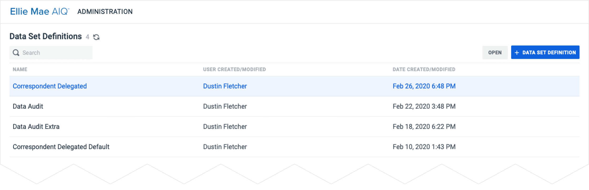
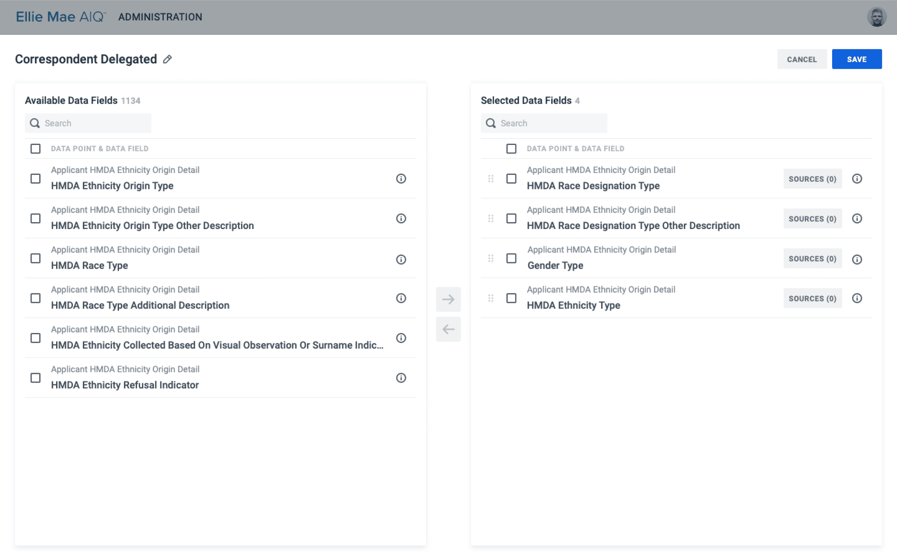
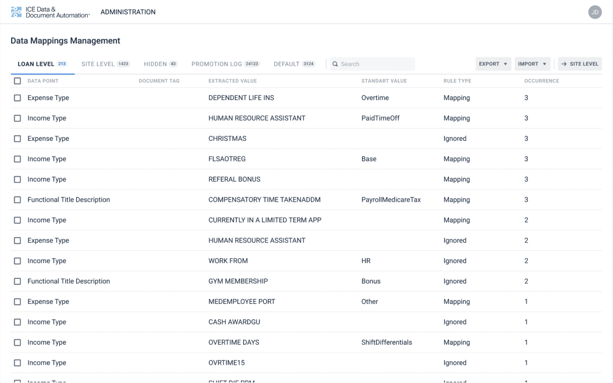
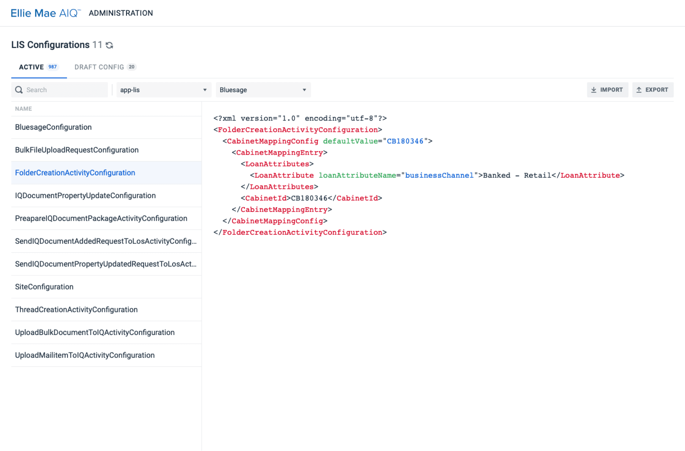

Overview
DDA Admin is the configuration layer behind the entire DDA ecosystem. It allows Site and System Administrators to tailor application settings to their organization’s needs, from document management and data mappings to automation and integrations.
I’ve led Admin design from day one, working closely with backend engineers to build new configuration apps and improve existing ones.
The Challenge
Before admin tools existed, configuring DDA applications meant manually writing JSON or XML — error-prone, slow, and inaccessible to non-technical administrators . As more clients onboarded, visual configuration interfaces became critical.
The goal: replace raw config files with intuitive apps that accurately represent complex data structures while remaining approachable for client admins who need precise control but aren't necessarily technical.
My Approach
-
Backend engineers as primary partners. Admin interfaces map directly to complex data models and APIs. Together we translated system constraints into usable UI.
-
Designing for client admins. Site/System Administrators configure parameters for specific client needs. The design had to make complex configurations feel approachable without sacrificing power.
-
Consistency through the Design System. All admin apps are built on it, ensuring a uniform experience across a growing number of screens.
Selected Projects
Data Sets Definitions Management
Configuration app for Data Audit. Users create and manage rules determining which data gets compared for each field in specified documents.

A dual-panel picker (available ↔ selected fields) makes composing complex definitions easy and error-free .

Data Mappings Management
Interface for managing rules that connect extracted document values to standardized data points . Supports loan-level and site-level views, filtering, search, and bulk import/export across thousands of entries.

LIS Configurator
Configuration for core product functions was previously managed through raw XML. The app now provides structured lists with Active and Draft states, inline XML preview, and import/export, making configuration visible without direct file editing .

Impact
-
Replaced manual JSON/XML editing with visual interfaces: reducing errors and making configuration accessible to client admins.
-
New admin apps shipped alongside every major web feature, keeping configuration in sync with product growth.
-
Faster client onboarding: admins can set up and maintain environments independently, without engineering support.
-
Consistent experience: shared Design System means admins learn one pattern and apply it everywhere.
-
Scaled with the product: the system grew alongside DDA Web's expansion from 30% to 70%+ feature parity, supporting every new application along the way.
Reflection
Admin tools rarely get portfolio spotlight, but they're the invisible backbone of a configurable product. Designing them taught me to think in abstractions — translating data models into interfaces that feel obvious, even when the underlying logic is anything but.
Discover Other DDA Projects
DDA Design system
Design System for our web projects, including DDA Web, Admin Panel, and Analyzers.

DDA Web Platform
Web version of our main product that automates tasks for lenders, investors, and servicers.

DDA Desktop Platform
Desktop version of our main product that automates tasks for lenders, investors, and servicers.